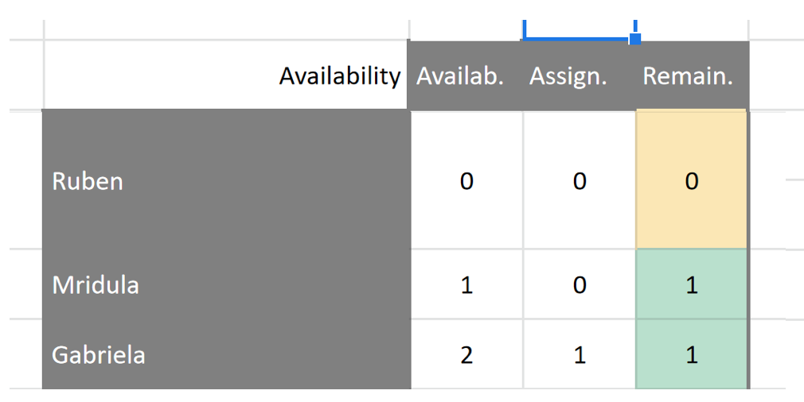

EJ Reproducibility Checks: Workflow

Version History:
Workflow v1: The bulk of this was the work of Joan Llull.
Workflow v1.1: Minor additions by Florian Oswald.
Purpose of this document
This document describes the current workflow for reproducibility checks at EJ.
Input: Replication package provided by the authors of accepted papers.
Outputs:
- Email interactions with the authors during the process (via Editorial Express,
EE), - clearance with authors after the checks are successfully completed (via
EE), - metadata collection on each article at in spreadsheet
SS(via Google Docs, see below).
Interested Parties:
- EJ Data Editor: Florian Oswald
- EJ Publications Manager (Editorial Office): Brooke Sperry
- Replicators
Glossary:
| Abbreviation | Meaning | comments |
|---|---|---|
EE |
Editorial Express | login |
EJ |
The Economic Journal | web |
ME |
Managing Editor | Person in charge of accepting/rejecting papers at EJ |
DE |
Data Editor | Person in charge managing reproducibility checks at EJ |
HT |
EE Holding Tank |
|
SS |
Shared Spreadsheet | Main spreadsheet to log all operations, Replicator availability and time use. You need an access link for that. |
DB |
Shared Dropbox folder | Dropbox folder storing all replication packages. Brooke or Florian place package there, replicators download from here. Read-only access for everyone. |
Workflow in Detail
We proceed chronologically. The paper has just been conditionally accepted by the managing author (ME).
Step 2. Data Editor (Florian): Acquisition of package
When the authors (re-)submit the package via EE, Florian sees and downloads the paper from EE’s Holding Tank (HT). The HT includes papers which are
- initial submissions,
- revisions, and
- conditionally accepted articles.
Brooke handles the first two types, Florian downloads the third type. Either Brooke or Florian places the replication package into folder 2. Submitted replication packages of the shared dropbox DB, which has the following layout:
├── 1 Key documents
├── 2. Submitted replication packages
├── 3. Replication reports
├── 4. Background documents
└── 5. Back office Data EditorHe then leaves a note on EE as shown in figure Figure 1. Notice that this happens after the article has been assigned to replicators!

EE HT on behalf of the DE. Notice manual addition of comment.Step 3. Data Editor: Logging of Metadata and Replicator Assignment
Florian creates a new entry (a new row) in SS (shared via link on google sheets) including all the relevant meta-data for the article, and assigning it to a replicator.
The relevant columns to be filled by Florian include:
MS: Manuscript numberR: Current round of the reproducibility checks (1,2,3,…)- Author, Title, Email from the authors,
ME’s initials, Data Policy - Arrival date: the date at which paper arrive in
HT(Feb 16 in the example above). - Status: when assigning it to replicators, status should be A (for assigned).
- Checker: pick one of the available replicators
- Date assigned: the date at which this Replicator Assignment is performed.
After those fields have been entered, the Data Editor section of the spreadsheet turns white, and the replicator’s part turns green. Florian usually sends a short email to the replicator indicating that a new paper has been assigned, but it is the job of the replicators to regularly check whether they have papers assigned. This is illustrated in figure Figure 2.

DE logs meta data of replication package.Step 4. Replicators
Replicator Availability
- The replicators declare their current availability to handle papers in the corresponding section of the
SS, by modifying columnAvailab.in this part of the spreadsheet, with the understanding thatAvailab. = 2would mean that the replicator can handle 2 packages starting today:

SS. Replicators edit column Availab.The spreadsheet fills in the second and third columns and determines the color of the third column. This helps Florian assigning replicators efficiently, and allows replicators to be idle if they need to be so.
Replicator Timeline
- As noted above, the day a paper is assigned to a replicator, their section of the Excel file becomes green. Five days after the paper has been assigned to the replicator, it automatically turns yellow, and 10 days after assignment it turns red.
- Our target is for the replicator to complete any given package within 7 days. The color scheme is supposed to help replicators manage this deadline, see figure Figure 3.

Replicator Workflow
Notice that this section is close to identical whether the replicator uses their own machine or the cloud based nuvolos system
- Navigates to shared
DBfolder2. Submitted replication packages, and looks for the correct submission number and Author names. - From that folder, downloads a copy of package from
3. Replication Packageof the corresponding paper in the shared dropbox to their local drive. Notice that3. Replication Packageis read-only on the dropbox, so replicators are forced to do their work outside of it. - Replicator starts clock.
- Replicator studies the package.
- This will involve a very close reading of the
READMEfile. - It will also involve a quick reading of paper and appendices:
- To get an overview of what the required outputs of the replication package are. This includes all figures, tables and other numerical results.
- To carefully check the data citation practice. All datasets need to be cited like any other reference (i.e. like a cited paper).
- Next, follows contained instructions, and tries to reproduce all results in the paper. If the contained instructions are insufficiently precise so that after 60 minutes the replicator has not gained an understanding of how certain results can be reproduced, we abort and go to the next step. This does not include actual runtime, which can be significantly longer.
- This will involve a very close reading of the
- Replicator stops clock. (If program requires significant runtime, this is not billed as replicator time.)
- Fills in reproducibility report, a template for which is stored in shared
DBat3. Replication reports - Fills in corresponding section of
SSwith relevant data:- Completion date
- Time spent (in hours. 1.9 hours is 1h 54min): This information will determine the replicators payment.
- Whether the checks were successful or not (Y/N)
- List the software used. Multiple softwares in comma separated list like
stata,fortran,matlab. Do not include versions, likestata 18 (MP2). - The type of Data Statement that should be published with the paper. This can be one of
A,S,T,Por the combinationsA;T,A;S,A;S;T. The meaning of each is explained in tab Codes ofSS.
- Replicator turns switch
Statusfrom A (assigned) to B (back to DE)
In short, the Replicator fills out the part of the SS shown in figure Figure 4.

Replicator: Precise Guidelines
This section provides some guidelines for what a replicator should look out for in a package, and things which may be included in their report to the DE.
Any of those conditions not met means that the replicator can comment on it in their report. All conditions go under the common heading making replication less cumbersome.
- The
READMEneeds to contain all necessary information to reproduce the findings in the paper. It should not be required to read the actual source code in order to find out which part of the code produces with part of the output. - The produced output should appear in a clearly designated location, ideally a separate folder called
output. - The produced output should be easy to identify via filename. For example, figure 1 in the paper should correspond to
output/figure1.pdfin the package. - The package must contain all primary data sources. This is particularly important for cases like we downloaded the data from www.xyz.com couple of years ago. The data might no longer be available at this location, or it may be hard to find.
- The
READMEshould contain a clear description of the full data processing pipeline, starting with reading the primary data sources, processing codes and intermediate results, ending in final outputs. - The replication package should save produced output to files, and not only display results on screen, because this makes it very cumbersome to find and verify single outputs in the paper.
- The
READMEshould contain a clear description of the steps one needs to perform to replicate each result in the paper/appendix. A single driver script (for examplemaster.doorrun.m) is convienient, however, the gold standard is a table like the following:
| Output in Paper | Output in Package | Script/Program to execute |
|---|---|---|
| Table 1 | output/tables/table1.tex |
code/table1.do |
| Figure 1 | output/plots/figure1.pdf |
code/figure1.do |
| Figure 2 | output/plots/figure2.pdf |
code/figure2.do |
Step 5. Data Editor Decision
Florian reviews the replicator’s report, sends a final decision to the authors, including the report, and, if revisions are needed, summarizes the content of the report. If further revisions are needed, Florian changes the status to “R” (Revision) or “M” (Minor changes), depending on whether the revisions will require sending the package back to the replicators (“R”) or not (“M”), and fills the corresponding information on the decision section:
- Date Decision taken
- Decision Code:
AAccept,RMajor Revision,MMinor revision and short description - In case a package is resubmitted for the first time, the date of re-submission will be included to close this entry, and a new entry (row) will be created with revision number equal 2. If the re-submission is a minor comment, Florian changes the Status as described below but do not change the code of the Decision section. If the initial outcome of this iteration is already accept, mark the code as “A”, and introduce the current date also as re-submission date, as in figure Figure 5.

DE upon resubmission.- If no further revisions are needed, Florian notifies the authors accordingly and changes the status of the Excel file to “NT” (meaning ready for publication but Not Transferred yet). At that point, the first section of the Excel turns yellow:

Step 6. Editorial Office: Request Zenodo Upload
Brooke requests the authors to upload the package in EJ community at Zenodo, as indicated on the DE’s website.
TO DO update DE website. this:
Save and then Publish using the corresponding buttons that appear both at the bottom and at the page. This will notify the Data Editor who will review that the files you submitted correspond to those that went to the reproducibility checks.
becomes
Save and then Publish using the corresponding buttons that appear both at the bottom and at the page. Send an email to the Data Editor which includes the
md5string displayed on the zenodo page of your replication package (see figure ?@fig-md5 below). This string serves to check whether the files included in the package the Data Editor has accepted are exactly identical to the ones you uploaded to zenodo. It’s important to note that you must not modify your package in any way (add/remove files or make edits), or this check will fail. What you upload needs to be exactly identical to what you sent us in your final iteration.

We will compute our version of the md5 string on the finally accepted version of the replication package, located here in the shared DB:
├── 2. Submitted replication packages
├── MS_NUMBER_OF_PAPER
├── 3. Replication PackageThe computation of the md5 on our side is straightfoward. In R, for example, one would run command
# Assume we navigated into the above directory in `DB`
# can run this on command line or directly in `R`
$ Rscript -e 'tools::md5sum("3 Replication package.zip")'
3 Replication package.zip
"93b6634a97954d6cbfefa56f9dff315e" The string "93b6634a97954d6cbfefa56f9dff315e" needs to match the string on zenodo, or the paper will not be released for publication.
Step 7. Editorial Office: Return to ME
After the plagiarism checks, the paper is sent back to the ME for final acceptance, after which it is transferred to OUP for publication. When the file is transferred to OUP, it is marked in the system with a status of “P”, after which the entry turns green: